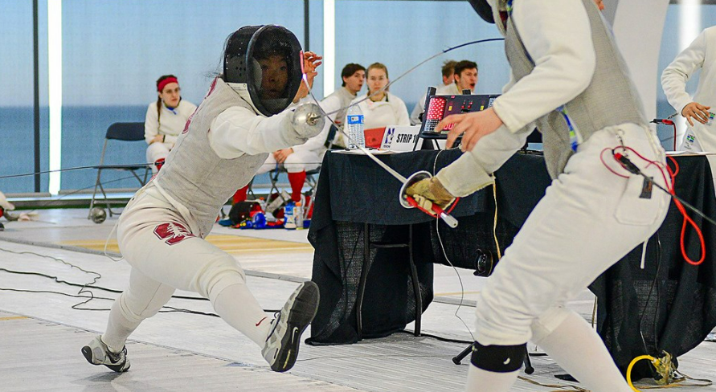

Fencing For Victory
About Us
(current)
Courses
(current)
Discussion Forum
(current)
Our Awards
(current)
FAQ
(current)
Course Registration
(current)
Why did the snowman get a divorce?
His wife was a total flake...

Why did the snowman get a divorce?
His wife was a total flake...